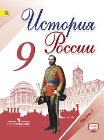

В учебнике освещаются ключевые вопросы и основные события истории России XIX-начала XX в. В основе методического аппарата учебника лежит системно-деятельностный подход в обучении, направленный на формирование у школьников универсальных учебных действий. Этому способствуют разноуровневые вопросы и задания, отрывки из исторических источников, темы для проектов, творческих работ и др.
§1. Россия и мир на рубеже XVIII—XIX вв.
§2. Александр I: начало правления. Реформы М. М. Сперанского
§3. Внешняя политика Александра I в 1801—1812 гг.
§4. Отечественная война 1812 г.
§5. Заграничные походы русской армии. Внешняя политика Александра I в 1813—1825 гг.
§6. Либеральные и охранительные тенденции во внутренней политике Александра I в 1815—1825 гг.
• Национальная политика Александра I
§7. Социально-экономическое развитие страны в первой четверти XIX в.
§8-9. Общественное движение при Александре I. Выступление декабристов
§10. Реформаторские и консервативные тенденции во внутренней политике Николая I
§11. Социально-экономическое развитие страны во второй четверти XIX в.
§12. Общественное движение при Николае I
• Национальная и религиозная политика Николая I. Этнокультурный облик
§13-14. Внешняя политика Николая I. Кавказская война 1817—1864 гг. Крымская война 1853—1856 гг.
• Культурное пространство империи в первой половине XIX в.: Наука и образование
• Культурное пространство империи в первой половине XIX в.: Художественная культура народов России
§15. Европейская индустриализация и предпосылки реформ в России
§16. Александр II: Начало правления. Крестьянская реформа 1861 г.
§17. Реформы 1860—1870-х гг.: Социальная и правовая модернизация
§18. Социально-экономическое развитие страны в пореформенный период
§19-20. Общественное движение при Александре II и политика правительства
Национальная и религиозная политика Александра II. Национальный вопрос в Европе и в России
§21. Внешняя политика Александра II. Русско-турецкая война 1877—1878 гг.